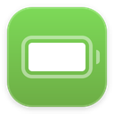

Швидка
Виклики NT і вікна обробляє ядро, композитор працює на Vulkan.
Універсальна гібридна операційна система нового покоління для ПК
Готова до роботи одразу: не треба встановлювати драйвери й програми.

Виклики NT і вікна обробляє ядро, композитор працює на Vulkan.

ОЗП зайнято після старту (ВМ, 6 ГБ).
Провідник із вкладками, Chrome, PowerShell 7, Git, WSL, KVM.
DXVK і vkd3d-proton, оверлей FPS, андервольт ЦП і розгін ГП.
Intel, AMD і NVIDIA, Wi-Fi, звук і мережа працюють одразу з Live USB.
NT-модулі в ядрі Linux, WinHvPlatform на KVM, Secure Boot, диск C: на NTFS.
Замість непотрібного Edge — Google Chrome, оптимізований для Arctic з коробки. Браузер, яким користується більшість і який зручний для всіх.

Вкладки, швидкий доступ, диск C: на NTFS.
Знімки з QEMU, 1920×1080.